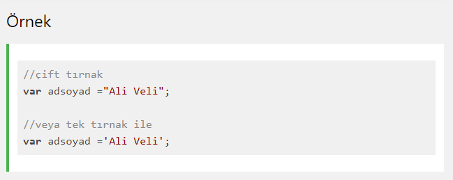
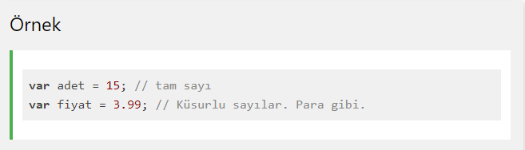
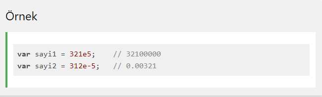
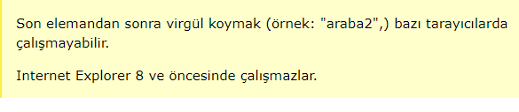
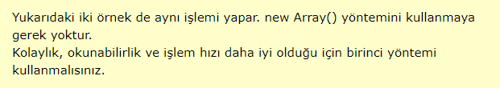

Bir JavaScript string, basitçe bir grup karakteri saklamaya yarar. "Ali", "Ali Veli", "Bu bir web sitesidir", "sezon11" birer string örnekleridir.
Bu tırnak işareti tek veya çift olabilir.
Bir string değişkene değer atarken, metnin içinde tek tırnak veya çift tırnak olmadığı müddetçe istediğiniz uzunlukta veri girebilirsiniz.
Eğer metin içinde string yapısını bozacak tek tırnak veya çift tırnak varsa buna özel önlem almanız gerekir.
Bir metinde string yapısını bozacak tek tırnak veya çift tırnak varsa o zaman JavaScript kaçış işaretini kullanmalısınız.
Kaçış işareti \ işaretidir.
örneği inceleUyarı: Kodu incelemek için örneği incele dedikten sonra CTRL+U tuşuna basınız
String yerleşik olarak bazı özelliklere sahiptir. length bunlardan biridir ve stringin uzunluğunu verir.
örneği inceleUyarı: Kodu incelemek için örneği incele dedikten sonra CTRL+U tuşuna basınız
Yukarıda bahsedildiği gibi bir stringe atadığınız değer içinde " veya ' gibi özel karakterler varsa bu JavaScript tarafından yanlış anlaşılabilir.
Bildiğiniz gibi JavaScript'de " ve ' karakterleri string değişkene veri atarken kullanılan karakterlerdir.
Bu tür bir sorun ile karşılaşmamak için eğer metnin içinde " veya ' karakterleri varsa başına \ karakteri koyarak bunun metnin bir parçası olduğunu JavaScript'e bildiririz.
\ karakteri JavaScript'te Kaçış Karakteri olarak adlandırılır.
örneği inceleUyarı: Kodu incelemek için örneği incele dedikten sonra CTRL+U tuşuna basınız
*** \ kaçış karakteri
•Metinde tek tırnak varsa: \'
•Metinde çift tırnak varsa \"
•Metinde ters eğik çizgi varsa \\
şeklinde kullanılabilir.
String metodları, string türü veriler üzerinde işlem yaparken faydalandığımız metodlardır.
Normalde String ilkel bir türdür ve ilke türlerde özellik ve metodlar olmaz. Nesnelerin özellikleri ve metodları olur.
Fakat JavaScript ilkel değerler için de metod ve özelliklere sahiptir. Çünkü JavaScript ilkel değerleri işlerken bunlara nesne gibi davranır.
length özelliği stringin uzunluğunu verir (karakter sayısını, boşluklarda dahil olmak üzere).
örneği inceleUyarı: Kodu incelemek için örneği incele dedikten sonra CTRL+U tuşuna basınız
Bir string içindeki bir karakterin ya da metnin bir parçasının sıra numarasını (index) bulmak için indexOf metodu kullanılır.
indexOf metodu kendine verilen karakteri ya da kelimeyi metnin içinde arar ve bulduğu ilk değerin sıra numarasını verir.
Sıra numarası yani index string işlemlerinde çokca kullanılan bir özelliktir.
örneği inceleUyarı: Kodu incelemek için örneği incele dedikten sonra CTRL+U tuşuna basınız
lastIndexOf metodu kendine verilen karakteri ya da kelimeyi metnin içinde arar ve bulduğu son değerin sıra numarasını verir.
Uyarı: Kodu incelemek için örneği incele dedikten sonra CTRL+U tuşuna basınız
indexOf ve lastIndexOf metodu, kendine verilen değeri metin içinde bulamazsa geriye -1 döndürür.
Bunun anlamı değer bulunamadı demektir.
*JavaScript saymaya 0'dan başlar.
*Indeks numarasıda verilirken hesaplamaya sıfırdan başlanır. Yani birinci sıradaki karakterin index numarası 0'dır.
Her iki metod içinde aramamaya başlanılacak başlangıç numarası verilebilir.
Yani diyebilirsinizki "aramaya 10. karakterden sonra başla".
Bunu metoda ikinci bir parametre vererek yaparız.
örneği inceleUyarı: Kodu incelemek için örneği incele dedikten sonra CTRL+U tuşuna basınız
Metnin içinde kelime aramak için ayrıca search() metodu vardır. Bu metod indexOf ile aynı çalışır ama search() metodu çok daha güçlüdür.
Çok daha fazla parametre alır. Daha fazla seçeneğe sahiptir.
JavaScript ile çoğu zaman metinler üzerinde işlemler yaparız.
Bazen bir metnin içinde kelime arar bazen de metnin içinden belirli bir bölümü çıkartmak isteriz.
JavaScript bu tür metin işlemleri için bize 3 metod sunar:
*slice(başlangıç, bitiş)
*substring(başlangıç, bitiş)
*substr(başlangıç, bitiş)
Bu metodlar ile metinler üzerinde ayrıştırma işlemleri gerçekleştirilir.
Farklı programlama dillerinde farklı sayı türleri vardır. Örneğin C# dilinde int, int16, decimal gibi farklı türler vardır.
16 gibi bir sayıyı tutmak için int türü yeterli olurken, 3.15 gibi küsurlu değerleri tutmak için decimal kullanılır.
JavaScript programlama dilinde tek bir sayı türü vardır.
Çok büyük veya çok küçük sayılar bilimsel gösterim ile yazılabilir:
JavaScript diğer programlama dillerinden farklı olarak, int, short, long gibi farklı sayı türleri tanımlamaz.
JavaScript sayıları her zaman 64-bit Floating Point (kayan nokta) olarak tutar.
**NaN kelimesi JavaScript için ayrılmış bir kelimedir. Bir matematiksel işlemde sayı olmayan bir değer kullandığınızda
sonuç NaN döner. Örneğin 100 / "armut" işleminin sonucu NaN'dır.
örneği inceleUyarı: Kodu incelemek için örneği incele dedikten sonra CTRL+U tuşuna basınız
*Fakat eğer string değer sayısal değer içeriyorsa sonuç sayı olur:
örneği inceleUyarı: Kodu incelemek için örneği incele dedikten sonra CTRL+U tuşuna basınız
Daha önce stringde gördüğümüz gibi sayılar nesne olarak tanımlanabilir.
Normalde JavaScript sayıları ilkel değerlere sahiptir: 1,255, 5678 gibi.
Fakat var sayiNesne= new Number(123); şeklinde nesne olarak tanımlanabilir.
Bu şekilde tanımlamak JavaScript'i yavaşlatır. O sebepten gerçekten ne yaptığınızı bilmiyorsanız kullanmayın.
JavaScript dizileri birden fazla değeri tek bir değişkende depolamak için kullanılır.
örneği inceleUyarı: Kodu incelemek için örneği incele dedikten sonra CTRL+U tuşuna basınız
Dizi özel bir çeşit değişkendir, tek seferde birden fazla değeri barındırabilir.
Eğer bir listeniz varsa (örneğin araba isimleri listesi), her bir araba ismini değişkenlerde şöyle saklayabilirdiniz:
var araba1 = "araba1";
var araba2 = "araba2";
var araba3 = "araba3";
Ancak, araba isimleri içinden tek bir tanesini bulmanız gerektiğinde ne yapacaktınız? Ve 3 tane değil de 300 araba ismi olsaydı?
Çözümü bir dizi kullanmak!
Bir dizi tek bir isim altında birden fazla değeri saklayabilir, ve siz de index numarası yardımıyla istediğiniz değere ulaşabilirsiniz.
Bir JavaScript Dizisi oluşturmanın en kolay yolu köşeli parantezleri kullanmaktır.
Yazımı şu şekildedir: var dizi_ismi = [oge1, oge2, ...];
örneği inceleUyarı: Kodu incelemek için örneği incele dedikten sonra CTRL+U tuşuna basınız
Boşluklar ve satır araları önemli değildir. Dizi oluşturma birkaç satırda birden de yapılabilir:
örneği inceleUyarı: Kodu incelemek için örneği incele dedikten sonra CTRL+U tuşuna basınız
Bu örnek bir dizi oluşturur ve içine değerler atar:
örneği inceleUyarı: Kodu incelemek için örneği incele dedikten sonra CTRL+U tuşuna basınız
Bu örnek ifade, arabalar dizisinin ilk elemanının değerini değiştirir:
örneği inceleUyarı: Kodu incelemek için örneği incele dedikten sonra CTRL+U tuşuna basınız
JavaScript ile tüm diziye birden erişmek için sadece dizinin adını kullanmak yeterlidir:
örneği inceleUyarı: Kodu incelemek için örneği incele dedikten sonra CTRL+U tuşuna basınız
Diziler özel bir tür objedir. JavaScript typeof özelliği diziler için kullanıldığında geriye "object" değerini döndürür.
Ama JavaScript dizileri en iyi dizi olarak ifade edilebilirler.
*** Diziler elemanlarına erişmek için numaraları kullanırlar. Bu örnekte insan[0], Ali değerini döndürür:
örneği inceleUyarı: Kodu incelemek için örneği incele dedikten sonra CTRL+U tuşuna basınız
***Objeler elemanlarına erişmek için isimleri kullanırlar. Bu örnekte, insan.ad geriye Ali değerini döndürür:
örneği inceleUyarı: Kodu incelemek için örneği incele dedikten sonra CTRL+U tuşuna basınız